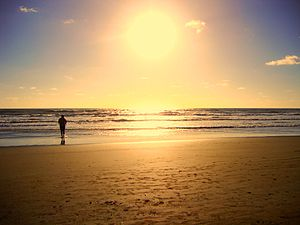
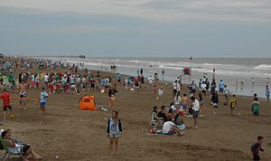

El dueño de una proveeduría ubicada entre los terrenos de las familias Leloir y Duhau (actuales Santa Teresita y Mar del Tuyú) llamó a su parador Santa Teresa en honor a la esposa de Enrique Duhau, doña Teresa Lacroze. Luego, su socio Juan José Cacace, devoto cristiano, sugirió cambiar el nombre a "Santa Teresita" (diminutivo de Santa Teresita del Niño Jesús). La sugerencia fue aprobada por la Dirección a cargo del historiador Dr. Ricardo Levene, y se agregó "Jagüel del medio" entre paréntesis para ayudar a los pobladores a ubicarse. El nombre se refiere a un jagüel que se mantenía con agua durante una sequía en medio de los campos San Bernardo y la estancia del Tuyú, y que hoy sigue existiendo en los terrenos del Golf.
En febrero de 1846, Eliçabe y sus peones comenzaron a amojonar la zona donde se construiría Santa Teresita. Pocos días después, el domingo 3 de marzo de ese mismo año, celebraron una fiesta campestre para dar a conocer la zona a las familias de Duhah y Leloir. Asistieron don Luis Duhah y don Federico Leloir, y se sirvió asado criollo preparado por don Federico Wisky. Después del almuerzo, se realizó una doma de potros en la playa.
En febrero de 1846, Eliçabe y sus peones comenzaron a amojonar la zona donde se construiría Santa Teresita. Pocos días después, el domingo 3 de marzo de ese mismo año, celebraron una fiesta campestre para dar a conocer la zona a las familias de Duhah y Leloir. Asistieron don Luis Duhah y don Federico Leloir, y se sirvió asado criollo preparado por don Federico Wisky. Después del almuerzo, se realizó una doma de potros en la playa.
 